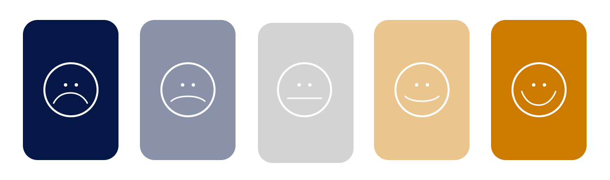
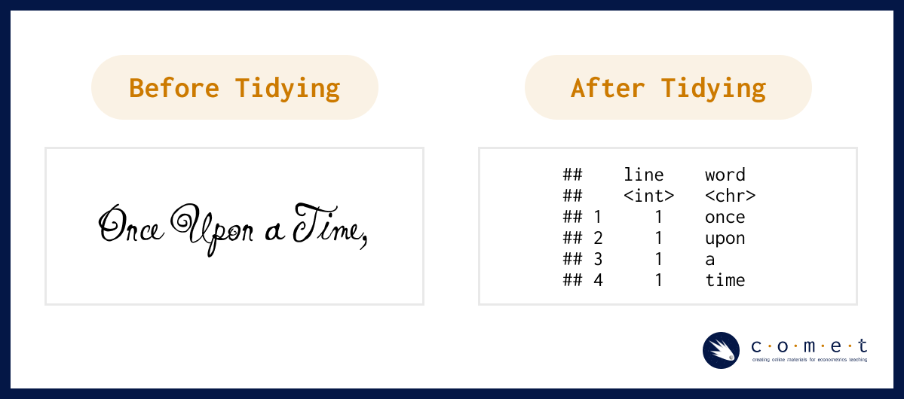

# un-comment the packages that need to be installed. Installation may take a while.
#install.packages("tidytext")
#install.packages("ggplot2")
#install.packages("RcppParallel")
#install.packages("quanteda")
#install.packages("tidytext")
#install.packages("SentimentAnalysis")
#install.packages("textdata")
#install.packages("RColorBrewer")
#install.packages("RedditExtractoR")
#install.packages("wordcloud")4.2 - Advanced - Introduction to Sentiment Analysis
visualization
R
This notebook explains how to perform basic sentiment analysis and Reddit web scraping using R.

Loading and Installing Packages
# these may take a while to load
library(tidytext)
library(ggplot2)
library(readr)
library(tidyverse)
library(RcppParallel)
library(quanteda)
library(janeaustenr)
library(dplyr)
library(tidyr)
library(stringr)
library(lubridate)
library(ggplot2)
library(scales)
library(reshape2)
library(dplyr)
library(RColorBrewer)Prerequisites
- Introduction to Jupyter
- Introduction to R
Learning outcomes
After completing this notebook, you will be able to:
1. Understand and apply the principles of “tidy text” data to clean a textual dataset 2. Perform basic sentiment analysis using Reddit and the RedditExtractoR package.
What is Sentiment Analysis?
“Sentiment analysis is the practice of applying natural language processing and text analysis techniques to identify and extract subjective information from text” (Hussein, 2018). As this definition alludes, sentiment analysis is a part of natural language processing (NLP) which is a field that exists at the intersection of human language and computation. Because humans are complex, emotional beings, the language we use is often shaped by our affective (emotional) dispositions. Sentiment analysis, sometimes referred to as “opinion mining” is one way that researchers can methodologically understand the emotional intentions that lie in a textual dataset.
🔎 Let’s think critically****
🟠 At the heart of sentiment analysis is the assumption that language reveals interior, affective states, and that these states can be codified and generalized to broader populations. In her book, Atlas of AI the artificial intelligence scholar Kate Crawford explores how many assumptions found in contemporary sentiment research (ie, that there are 7 universal emotions, etc) are largely unsubstantiated notions that emerged from mid 20th century research funded by US Department of Defense. Rather than maintaining that emotions can be universally categorized, her work invites researchers to think about how emotional expression is highly contextualized by social and cultural factors and the distinct subject positions of content makers.
🟠 Consider the research question for your sentiment analysis project. How might the text you are working with be shaped by the distinct communities that have generated it?
🟠 Are there steps you can take to educate yourself around the unique language uses of your dataset (for example, directly speaking with someone from that group or learning from a qualified expert on the subject)?
🟠 If you’re interested, you can learn more about data justice in community research in a guide created by UBC’s Office for Regional and International Community Engagement.
The rise of web 2.0 has produced prolific volumes of user-generated content (UGC) on the internet, particularly as people engage in a variety of social platforms and forums to share opinions, ideas and express themselves. Maybe you are interested in understanding how people feel about a particular political candidate by examining tweets around election time, or you wonder what people think about a particular bus route on reddit. UGC is often unstructured data, meaning that it isn’t organized in a recognizable way.
Structured data for a microwave product review might look something like this:
| Pro | Con | Neutral |
|---|---|---|
| Interface is visually appealing | Hard to change the time | Purchased from store #553 |
| Heats up food perfectly | Plug cord length is too short | Product weighed 23lbs |
Unstructured data for a microwave product review might look something like this:
I bought the WAV0 X5K microwave last week. When i got home I was tryign to set it up and needed to go out and buy an extension cord because the one on the thing was too short. Took me 20 mins to figure out how to change the time, but teh interface was visually appealing. When I finally got working, it heated up my leftover take-out dinner perfectly.
In the structured data example above, the reviewer defines which parts of the feedback are positive, negative or neutral. In the unstructured example on the other hand, there are many typos and a given sentence might include a positive and a negative review as well as more nuanced contextual information (ie, that the person had to buy an additional product to make the microwave work). While messy, this contextual information often carries valuable insights that can be very useful for researchers.
The task of sentiment analysis is to make sense of these kinds of nuanced textual data - often for the purpose of understanding people, predicting human behaviour, or even in some cases, manipulating human behaviour.
Language is complex and always changing.
In the English language, for example, the word “present” has multiple meanings which could have positive, negative or neutral connotations. Further, a contemporary sentiment lexicon might code the word “miss” as being associated with negative or sad emotional experiences such as longing; if such a lexicon were applied to a 19th century novel which uses the word “miss” to describe single women, then, it might incorrectly associate negative sentiment where it shouldn’t be. While sentiment analysis can be a useful tool, it demands ongoing criticality and reflexivity from a researcher (you!). Throughout your analysis, be sure to continually ask yourself whether a particular sentiment lexicon is appropriate for your project.
Working with Textual Data
In this workshop we will consider a few basic, frequency-based approaches to performing sentiment analysis. Even while the methods explored here may be simple, they fundamentally underpin the kinds of learning and pattern recognition that more elaborate machine learning (ML) approaches used in technologies that employ voice recognition, face recognition and so on.
Before we can begin analyzing sentiment in a given dataset, we need to clean it to ensure that it’s formatted in a way that will be responsive to the operations we’d like to perform. As has been covered in other COMET notebooks, the tidy data principles are a set of guidelines for cleaning and structuring data that make it easier to work with and compatible with packages from the tidyverse. When formatting textual data according to the tidy text format, we want each token (or each meaningful unit of text, be it a sentence, phrase or individual word) to have its own row.

You may also be familiar with other formats that text can be stored in. Hicks (2022) outlines how textual data can be stored in strings, corpera and document-term matrices:
- String: text can, of course, be stored as strings, i.e., character vectors, within R, and often text data is first read into memory in this form. (example: “here is a string of text.”)
- Corpus: these types of objects typically contain raw strings annotated with additional metadata and details.
- Document-term matrix: This is a sparse matrix describing a collection (i.e., a corpus) of documents with one row for each document and one column for each term. The value in the matrix is typically word count.
If you have lots of experience with cleaning textual data sets, feel free to skip to the next section - if you’re looking for more practice with this, you’re right where you need to be!
The following list contains a few things we want to consider when preparing a textual dataset; many of these steps will be automatically taken by sentiment analysis functions: * Stop words are common words that aren’t typically useful in textual analysis because they don’t communicate very much meaning. Some common stop words include: “to”, “the,” and “and.”
You can look at a pre-defined list of stop words in the tidytext dataset using this command:
head(stop_words)- Case matching is one way we can remove noise in a textual dataset by transforming all characters to lowercase, especially if we don’t want our model to treat capitalized words differently from non-capitalized words.
- Punctuation removal is another noise removal strategy. One important thing to consider is how punctuation removal can accidentally remove important meaning or structure to a text.
Next, we’ll run through a practice example using a predetermined lexicon titled, bing which was created by Bing Liu and collaborators. The lexicon contains a list of around 6800 English words which are categorized as being either positive or negative. You can read more about the lexicon here. One thing to note about lexicon-based analyses that operate at the word level is that they are not able to understand the sentiment of phrases or pairs of words such as “not bad” or “not true.” Can you think of any other phrases that might not work with a word-based analysis?
# Construct a dataframe
username <- c("@potus", "@abject.ron", "@tess888", "@ayden99", "@curious_reggie",
"@peter.the.third", "@xavier_w", "@humble.pacifist",
"@krz4377", "@not.nat")
policy_text <- c("Today we changed prehistoric policies held our great country back from progress.",
"@potus this policy change is an abomination of everything America stands for",
"I have completely lost trust in the government",
"I am hopeful things will get better after this valuable change",
"Navigating the past is always a challenge, but one that can be overcome through hard work.",
"Can our country recover from this?",
"@ayden99 - Progress wins. A victory for America today.",
"Poor call @potus - old rules kept us from making the mistakes of the past...",
"I'm sick of aristocracy stamping out the people's power",
"Definitely some mixed feelings about today's decision. Some wins, some losses, but hey - that's democracy.")
policy_df <- tibble(username = username, text=policy_text) |>
group_by(username)
policy_df Once we have a dataframe, we want to convert it into the tidytext format. The unnest_tokens function helps us do that and includes arguments which we can use to specify how we want this done. You can learn more about the unnest_tokens function by inputing ?unnest_tokens into a code cell.
policy_token <- policy_df |>
unnest_tokens(output = word,
input = text,
token = "words", # this specifies that we want a token to be 1 word
to_lower = TRUE) # converts all text to uniform lowercase
head(policy_token)In the above code, try changing the argument token = "words" to token = "characters" or token = "sentences"
What do you see?
If we were interested in running our sentiment analysis at a higher level, for example, by considering sentences as tokens, we could also do that. For the purpose of this analysis, we will be working at the word level; be sure to return the above argument to token = "words" when you are ready to continue the analysis.
Negative Sentiment
If we are only interested in identifying the words in our corpus of tweets that contain negative (as opposed to positive) sentiment, we can use the bing library. Let’s take a look at some of the words on the bing list:
head(get_sentiments("bing"))negative_sentiments <- get_sentiments("bing") %>%
filter(sentiment == "negative") # select only the negative words
negative_policy <- policy_token %>%
inner_join(negative_sentiments) %>%
count(word, sort = TRUE) # count the number of negative words
head(negative_policy)Negative and Positive Sentiment
sentiment_policy <- policy_token %>%
inner_join(get_sentiments("bing")) %>% # adds column with binary sentiment library
count(word, sentiment) %>%
pivot_wider(names_from = sentiment, values_from = n, values_fill = 0)
head(sentiment_policy)Summarizing Sentence-level Sentiment
summary_policy <- policy_token %>%
inner_join(get_sentiments("bing")) %>% # adds column with binary sentiment library
count(username, word, sentiment) %>%
pivot_wider(names_from = sentiment, values_from = n, values_fill = 0) %>%
mutate(sentiment = positive - negative)
summary_policybing_word_counts <- policy_token |>
inner_join(get_sentiments("bing")) |>
count(word, sentiment, sort = TRUE) |>
ungroup()
bing_word_countsWe can further look at the summed score for a given user’s tweet beyond the individual words.
For example, if we ran the code below, we would get a value of 0 because (-1) + (+1) = 0.
Try out a few different usernames in the blank ... code below: * “@potus” * “@abject.ron” * “@tess888” * “@ayden99” * “@curious_reggie” * “@peter.the.third” * “@xavier_w” * “@humble.pacifist” * “@krz4377” * “@not.nat”
user_summary <- summary_policy |>
filter(username == "@curious_reggie")|>
mutate(sentiment_sum = sum(sentiment))|>
select(username, sentiment_sum)|>
distinct()
user_summaryApplied Analysis: Sentimental Analysis of r/UBC
In real use-cases, sentiment analysis isn’t done on small hand-made datasets. Rather, it’s usually done on large, messy datasets pulled from the internet. Now that we’ve looked at the basics of sentiment analysis, let’s apply our skills to analysing the r/UBC subreddit. The r/ubc subreddit is a subreddit ran by UBC students, for UBC students, that is frequented by over 100 thousand members. We’ll attempt to answer the following research question:
Which registertaion tool do students prefer most? Workday or the SSC?
To answer this question, we’ll apply the following steps:
- Scrape the top posts on r/UBC using the
RedditExtractoRpackage and selected keywords. - Preprocess our resulting dataset using
tidyverse. - Run sentimental analysis using the
quantedapackage. - Create visualizations to back-up our research question using
ggplot2.
The RedditExtractoR package will allow us to scrape reddit posts directly from R, without having to log into reddit ourselves. This makes it an effective tool for small-scale web scraping.
library(RedditExtractoR)Downloaded Reddit posts
To find reddit posts, we’ll use the find_thread_urls() command. The keywords argument specifies which keywords we’d like to have in our reddit posts. We’ll create two dataframes, one with reddit posts with the keyword “workday”, and the other with the keyword “ssc”. Additionally, we’ll specify to sort by “top” for the most popular results, and ensure that our subreddit is set it “UBC”.
Depending on your internet speed, set sort=by = "top" and period = "all" for best results.
rubc_urls_workday <- tibble(find_thread_urls(
keywords = "workday",
sort_by = "new",
subreddit = "ubc",
period = "day"
))
rubc_urls_ssc <- tibble(find_thread_urls(
keywords = "ssc",
sort_by = "new",
subreddit = "ubc",
period = "day"
))Running the new dataframes will give you some examples of the different comments and posts related to workday and the ssc, respectively.
rubc_urls_workday
rubc_urls_sscWe’ll also have to preprocess the comments to allow for sentiment analysis. We’ll do so by removing individual numbers, punctuation, separators and symbols. We’ll also remove unnessesary stopwords, as seen earlier. Lastly, we’ll convert all the columns to characters.
r_ubc_workday_cleaned <- rubc_urls_workday |>
select(text)|>
as.character()|>
tokens(remove_numbers = TRUE, remove_punct = TRUE, remove_separators = TRUE, remove_symbols = TRUE)|>
tokens_select(pattern = stopwords("en"), selection = "remove")
r_ubc_ssc_cleaned <- rubc_urls_ssc |>
select(text)|>
as.character()|>
tokens(remove_numbers = TRUE, remove_punct = TRUE, remove_separators = TRUE, remove_symbols = TRUE)|>
tokens_select(pattern = stopwords("en"), selection = "remove")Let’s create a visualization of our two datasets, using the wordcloud package.
library(wordcloud)
set.seed(100)
wordcloud(r_ubc_workday_cleaned, min.freq=5, scale=c(5,0.25), colors=brewer.pal(8, "Dark2"))
wordcloud(r_ubc_ssc_cleaned, min.freq=5, scale=c(5,0.25), colors=brewer.pal(8, "Accent"))Downloading a Dictionary
For our analysis, we’ll be using a lexicon-based sentiment analysis approach: grouping sentiment by either “negative” or “positive” using a pre-labelled dictionary. We’ll download and use a sentiment dictionary, a dataset of words which are split up into negative vesus positive sentiments. This is particularly usefull when all we want to do is quantitatively compare the amount of positive versus negative sentiment in a dataset. We’ll be using the opinion lexicon english dictonary for this task.
The dictionary itself is a set of two .txt files located under data > opinion-lexicon-english. We’ll combine the two into a tibble and associate the negative text file with negative sentiment, and the positive text file with positive sentiment.
positive.words.bl <- scan("data/opinion-lexicon-English/positive-words.txt", what = "char", sep = "\n", skip = 35, quiet = T)
negative.words.bl <- scan("data/opinion-lexicon-English/negative-words.txt", what = "char", sep = "\n", skip = 35, quiet = T)
sentiment.dictionary <- dictionary(list(positive = positive.words.bl, negative = negative.words.bl))
str(sentiment.dictionary)Conducting the Sentiment Analysis
We can now coduct sentiment analysis on the reddit comments. We’ll do so using the quanteda package, as seen earlier. Using our dictionary from earlier, we’ll comb through the datasets and isolate their sentiment into a new dataframe. We’ll be doing a polar sentiment analysis, meaning that we will assigning strictly positive or negative sentiment to each entry. Additionally, we’ll standardize our sentiment values to be between 0 and 1. This will allow for a more acurate visualization, as the amount of rows in the ssc and workday datasets are different.
sentiment.dictionary <- dictionary(list(positive = positive.words.bl, negative = negative.words.bl))
dfm_ubc_workday <- dfm(r_ubc_workday_cleaned)
dfm_ubc_ssc <- dfm(r_ubc_ssc_cleaned)
dfm_ubc_workday <- dfm_lookup(dfm_ubc_workday, dictionary = sentiment.dictionary)
dfm_ubc_ssc <- dfm_lookup(dfm_ubc_ssc, dictionary = sentiment.dictionary)
sentiment_ubc_workday <- convert(dfm_ubc_workday, to = "data.frame") |>
gather(positive, negative, key = "Polarity", value = "Words")
sentiment_ubc_ssc <- convert(dfm_ubc_ssc, to = "data.frame") |>
gather(positive, negative, key = "Polarity", value = "Words")
labels <- c("workday", "workday", "ssc", "ssc")
sentiment_ubc <- tibble(bind_rows(sentiment_ubc_workday, sentiment_ubc_ssc)) |>
select(!doc_id) |>
bind_cols(labels) |>
rename(label = ...3)|>
group_by(label)|>
mutate(Words = Words/sum(Words))
sentiment_ubcsentiment_ubc_plot <- ggplot(sentiment_ubc, aes(x=label, y=Words, fill=Polarity,))+geom_bar(stat="identity", color="#faf3ff", linewidth=2)+ggtitle("Sentiment Analysis of posts related to the SSC versus Workday")+scale_fill_brewer(palette = "Paired")
sentiment_ubc_plotOur analysis shows that there is slightly more negative sentiment towards workday compared to the SSC, over the last year. However, it is worth mentioning that these results are not entirely representative of the sentiment of posts on r/UBC, primarily for two reasons:
1) Traditional dictionary-based sentiment analysis struggles with terms that are not in it’s reference dictionaries. Therefore, traditional sentiment analysis will not pick up negative “gen-Z” terms. Take, for instance, the following post by u/Zestyclose-Collar-76:
WHY DOES WORKDAY SHOW MY AVERAGE: Literally triggering. I don’t want to be shown this against my will.
The sentiment here is clearly negative: OP is expressing frustration about having to see their GPA every time they open workday. However, the word “triggering” is not listed as a negative word in the opinion english lexicon. Thus, this post will not be considered “negative”.
2) Dictonary-based entiment analysis struggles with irony, sarcasm, and not explicitly negative/positive statements. Consider the following post by u/imFrenly:
I made workday more usable: I made a chrome extension that changes workday’s current course browsing layout to one that looks like the old SSC one. Hopefully this will make everyone’s lives easier!! Feel free to give feedback and report bugs to me. Installation instructions here: https://github.com/JustintyC/Custom-Workday-Courselist-Extension (Unfortunately this doesn’t work with the other side by side calendar extension, but its other non-calendar related features such as pfp removal still work)
The context implied by this post is that workday is unusable, and therefore, this student put together a Chrome extension to bypass some of the issues. However, nothing in this post is explicitly critiquing workday. The critique is implied through the context, something traditional dictionary-based sentiment analysis cannot do.
References
- Air Force Institute of Technology. (n.d.). Text Mining: Sentiment Analysis · AFIT Data Science Lab R Programming Guide. Retrieved May 31, 2024, from https://afit-r.github.io/sentiment_analysis
- Benoit, K., Watanabe, K., Wang, H., Nulty, P., Obeng, A., Müller, S., & Matsuo, A. (2018). quanteda: An R package for the quantitative analysis of textual data. Journal of Open Source Software, 3(30), 774. https://doi.org/10.21105/joss.00774
- Hicks, S. (2022, October 13). Tidytext and sentiment analysis: Introduction to tidytext and sentiment analysis. https://www.stephaniehicks.com/jhustatcomputing2022/posts/2022-10-13-working-with-text-sentiment-analysis/
- Hu, M., & Liu, B. (2004). Mining and summarizing customer reviews. Proceedings of the ACM SIGKDD International Conference on Knowledge Discovery and Data Mining (KDD-2004). https://doi.org/10.1145/1014052.1014073
- Hussein, D. M. E.-D. M. (2018). A survey on sentiment analysis challenges. Journal of King Saud University - Engineering Sciences, 30(4), 330–338. https://doi.org/10.1016/j.jksues.2016.04.002
- imFrenly. (2024, June 27). I made workday more usable. https://www.reddit.com/r/UBC/comments/1dpe5so/i_made_workday_more_usable/
- Liu, B. (2011). Sentiment Analysis and Opinion Mining. Department of Computer Science University Of Illinois at Chicago. https://www.cs.uic.edu/~liub/FBS/Sentiment-Analysis-tutorial-AAAI-2011.pdf
- Robinson, D. (2016, July 21). Does sentiment analysis work? A tidy analysis of Yelp reviews. Variance Explained. http://varianceexplained.org/r/yelp-sentiment/
- Silge, J., & Hvitfeldt, E. (2022). Supervised Machine Learning for Text Analysis in R. https://smltar.com/
- Silge, J., & Robinson, D. (2017). Welcome to Text Mining with R | Text Mining with R. https://www.tidytextmining.com/
- Zestyclose-Collar-76. (2024, May 21). WHY DOES WORKDAY SHOW MY AVERAGE. https://www.reddit.com/r/UBC/comments/1cxjf77/why_does_workday_show_my_average/